Exercises
Each exercise has a ? button with a short explanation. Open the sliders button to change an exercise’s settings.
Hover over an answer button to see its keyboard shortcut. In Note, Interval, and Scale Construction, use the arrow keys to move the note and Return to place it. For keyboard practice in Notation Identification, choose Answer Button under Question Type. Shortcuts
Answer-choice exercises include Buttons in their settings. Choose All for the full answer bank or Limited to set a maximum. For questions with separate answer groups, such as a note name and an octave, the limit applies to each group. The exercise remembers its own selection.
Each exercise remembers its own Next Question setting.
Immediately flashes the correct button green and advances. The answer audio can finish while you read the next question. The music stays unanimated.
Wait plays the animation and keeps the correct answer button green. Press Next when you’re ready.
After Animation (default) advances automatically when the feedback finishes.
With SM-2 or FSRS, a missed card returns later. If you grade correct answers yourself, choosing Hard, Good, or Easy schedules the card and advances to the next question. Spaced repetition
MIDI keyboard input
On Linux, connect a USB MIDI keyboard or open the Virtual MIDI Piano Keyboard (VMPK). In VMPK, choose Edit → MIDI Connections and set MIDI OUT Driver to ALSA. In Alto, open MIDI in the exercise toolbar and select the keyboard’s output. VMPK may appear as MIDI Out out. You can play in the VMPK window while Alto receives the notes.
Note Identification. Play the note on the staff. Any octave counts when Octave is off.
Interval Construction. Play the missing endpoint in the requested octave. For a perfect fifth above C4, play G4.
Scale Construction. Play the scale in the requested direction. Undo removes the last note. The final note submits the scale unless the question asks for whole and half steps. In that case, mark the steps on screen and choose Answer.
Alto uses the exercise’s written spelling for matching pitches. On Ubuntu, install alsa-utils if the MIDI menu prompts for it. Reopen the menu after connecting a device. Choose MIDI → Off to disconnect, or leave the exercise.
Note Identification
A note is drawn on a staff. Press the button with its name.
In the exercise settings you can choose:
Clefs: the grand staff, or any of the seven single-staff clefs, listed in three groups: treble, bass, alto and tenor; then soprano, mezzo-soprano and baritone (written as an F clef, or as a C clef if you choose that in Settings). Each clef is shown with its name beside it. The same list is used by every exercise with these single-staff clefs. The staff interval exercises also offer the grand staff.
Range: the lowest and highest note that can appear, per clef.
Key signatures: which keys appear. When a key is on, the note’s name has to agree with the signature.
Note values: whole notes up to thirty-second notes, and the double whole note.
Note names: letters (C D E), solfège (Do Re Mi), or the Scale degrees group, with Caret (1̂ 2̂ 3̂) and Function (Tonic, Supertonic, Mediant, and so on). Every option has a text label beside its preview. Choose Major or Natural minor as the reference scale. The question names the key. With an empty key signature, the choices use C major or A natural minor. Caret labels use accidental prefixes, while function labels use words such as Raised Supertonic and Lowered Mediant.
Accidentals: whether notes with their own sharp, flat or natural sign appear.
Octave: turn this on to answer with both the note name and its octave. Middle C is C4.
The settings open in a pane on the right of the exercise. Each row names an option, and clicking it opens a page for that option. Changes apply to the next question right away.
Notation Identification
Choose a Question Type in the exercise settings. Answer Button is the default. A short phrase appears with one marking highlighted in blue. By default, choose its name from up to four answers or press its number key. In Click on Staff, the prompt names a component. Move the pointer over the music to highlight a component, then click to answer. In a repertoire excerpt, any occurrence of the named component counts. In a generated phrase, the prompt can specify a particular notehead, stem, or staff line. Open Terms in the exercise settings to select a whole group or check individual terms. Only checked terms can be highlighted or offered as answers. Select none clears every checkbox. Check a term to start a new selection, or turn the switch off to restore your previous selection. Choices favor the target’s category, then draw from other checked terms if space remains. When visually similar alternatives exist, most questions favor them. For example, a turn often appears alongside inverted, slashed, and vertical turns.
Eight piano excerpts from Schubert’s Erlkönig and Schumann’s Schöne Fremde and Die Lotosblume are installed with Alto. The composer, title, and measure numbers appear beneath the music. Try selecting Tie and Slur together to practice telling the two curves apart in context. Terms outside the collection use generated phrases. The original editions are in the public domain, and the digital scores come from the OpenScore Lieder corpus.
Topics include note values and rests, clefs, accidentals and microtonal signs, meter, barlines, repeats, articulations, dynamics, ornaments, octave signs, and instrumental techniques. For example, you can isolate ties and slurs, compare quarter-tone accidentals, or practice bowing and pedal marks. For advanced markings, Alto uses the selected music font when it contains the symbol and the bundled Bravura font otherwise. Glyph codes follow the Standard Music Font Layout index.
Beat Identification
Under Rhythm Component, choose what to identify in two measures of rhythm.
Time signature (default). Identify the hidden time signature. Choose 2/4, 3/4, 4/4, 6/8, 9/8, or 12/8.
Beat and meter. Read the time signature at the start of the rhythm and look at how ordinary eighth notes divide the beat. Groups of two are simple and groups of three are compound. Then count the main beats in one measure, including rests. Two beats are duple, three are triple, and four are quadruple.
For example, 3/4 and 6/8 both fit six eighth notes per measure. In 3/4, three groups of two make simple triple. In 6/8, two groups of three make compound duple.
Under Note Type, check the values you want to read. Dotted half and dotted quarter are separate choices. Eighth notes can also appear as eighth rests. Alto chooses meters that fit your selection. For example, selecting only Whole note gives one whole note in each measure of 4/4.
Turn on Tuplets for occasional numbered groups. Alto uses the frequencies measured in score openings published from 1700 to 1899, targeting about one tuplet group per 148 ordinary notes or rests. Most questions contain only ordinary rhythms. About 91% of the sampled groups were triplets and 6% were sextuplets. Quadruplets, quintuplets, septuplets, and nonuplets can also appear when they fit the measure and your selected note types. For example, three triplet eighth notes last one quarter beat.
Use Buttons to show All answers or a Limited set with the Button count you choose.
Beat Construction
Read the time signature and click the start of each main beat in both measures. Place a mark even if a note is still sounding or there is a rest. In 2/4, 3/4, and 4/4, mark every quarter-note beat. In 6/8, 9/8, and 12/8, mark the start of each group of three eighth notes.
Each new rhythm includes at least one rest. Use Note Type to choose the durations of both notes and rests. Turn on Tuplets to practice placing the main beats through triplets and duplets. Beat Construction remembers both settings independently of Beat Identification.
Click a blank to fill it with a beat number. Numbers start at 1 in each measure and follow the written order. Click a number again to clear it, or use Undo to remove your last mark. Use the arrow keys and Space to fill or clear a blank with the keyboard. Choose Answer or press Return when both measures are marked. After a correct answer, listen to the written rhythm. Alto taps each note once and keeps rests silent.
Rythmic Equations
Use Answer Type to choose what fills the blank. Symbol (the default) asks for a note or rest. Number shows numbered buttons. A number can be a missing factor, as in “half note ÷ □ = quarter note,” or a duration. For a duration, the question gives the counting unit: with Count in eighth notes, a quarter note plus a quarter note equals 4. Check both types to practice a mix.
For symbol answers, choose the note symbol that makes both sides of the equation last the same amount of time. For example, a quarter note plus another quarter note equals a half note. The blank can appear on either side of the equals sign. Under Operators, set Left operators and Right operators to choose how many arithmetic signs appear on each side of the equals sign (0–3 per side). The default is one on the left and zero on the right. Use the checkboxes under each count to select the signs allowed on that side. For example, set both counts to one, select only Addition (+) on the left and only Multiplication (×) on the right, and you can get quarter note + quarter note = □ × 2.
Turn on Parentheses to practice order of operations. Set at least two operators on one side so there is something to group. For example, in (quarter note + quarter note) ÷ 2 = □, add the two quarter notes first, then divide by two. With the switch off (the default), you can work from left to right on each side.
Multiplication and division use whole-number factors from 2 through 8 when the selected symbols allow them. Use Symbols to select notes, rests, and dotted notes from double whole through thirty-second values. A selected note and rest of the same duration both count as correct. Turn on Ties or Beams to mix in questions where a pair of notes counts as one duration. Beams group eighth, sixteenth, or thirty-second notes.
Keyboard Note Identification
One key on a piano keyboard is highlighted. Press the button with its name.
Use this exercise’s Note names setting to choose Letters, Solfège, Caret, or Function independently of Note Identification. Scale degrees follow the shown major key, or C major when key signatures are off. When octaves are required, degree and octave are separated: 1̂ / 4.
Black keys: include them. A black key has two names, such as C♯ and D♭, and either one is accepted.
Octave number: also choose the octave from a second row. Octaves count up from C, so middle C is C4.
Range: which part of the keyboard is asked.
Key signatures: show a key signature above the keyboard. The name then has to follow that signature. F♯ and G♭ are no longer interchangeable.

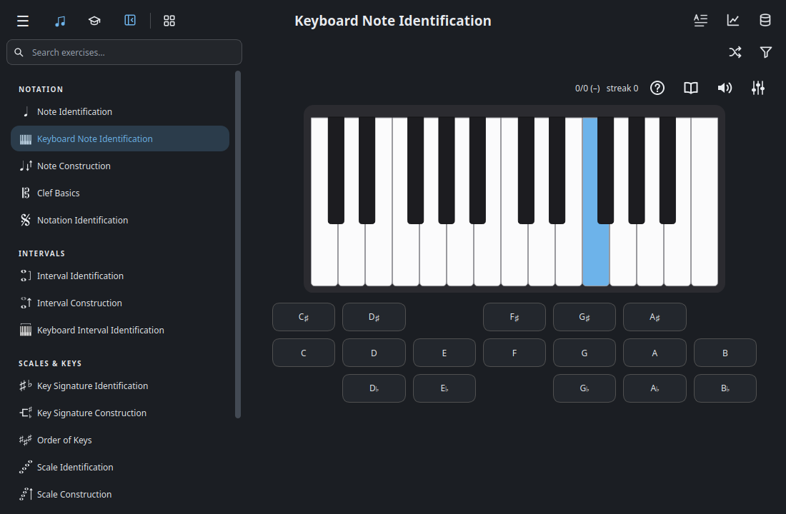
Note Construction
The reverse of note identification. A note name is shown, and you click the staff where that note belongs. It uses the Note names setting from Note Identification. With scale degrees selected, the question names the key, degree and octave. Under Question Type, choose Notes Only for note names or Scale and Degree to use selected keys. Switch between Major and Minor to choose signatures for each. To practice just one group, leave the other tab’s keys unchecked. Minor uses the natural minor scale. Under Degrees, check the scale degrees to practice. For example, choose D major and degree 3 to practice placing F♯.
Octave is on by default. Turn it off to place the note in any octave. Middle C is C4. On a grand staff, click the upper staff for notes from middle C up and the lower staff for the notes below.
Staff Key selects the signatures drawn on the staff independently of the keys in the prompts. Choose the unmarked signature for a staff with no sharps or flats. If the signatures differ, use the accidental buttons as needed.
Use the accidental buttons or right-click the staff to choose a sharp, flat, natural, or no sign.
A wrong click shows the note you placed so you can adjust and try again. Only the exact spelling counts, so G♯ is not A♭.
Without the mouse: the Higher and Lower buttons (or the ↑ and ↓ keys) move the note a line or space, and Octave ↑ and Octave ↓ (Page Up and Page Down) an octave. Typing a letter from A to G jumps to the nearest note with that name. Place note (Return) places it. A line under the staff says which note is chosen, in words a screen reader can read.
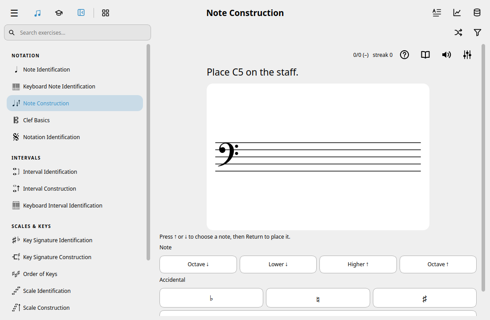
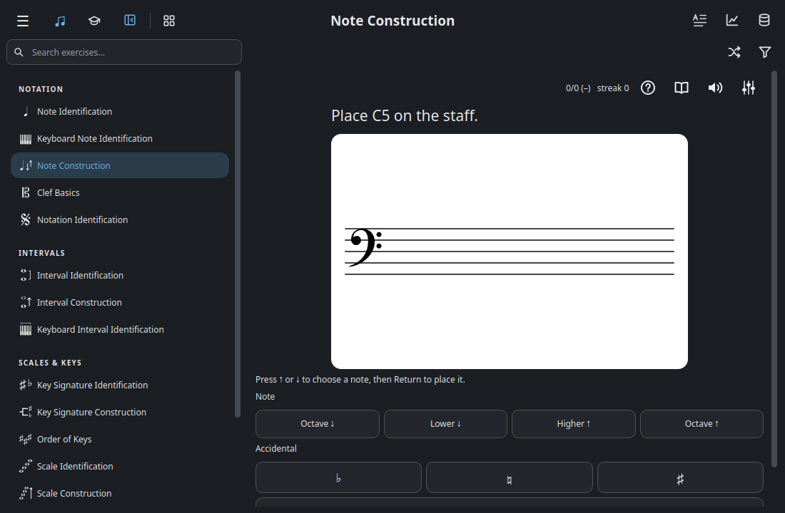
Clef Basics
Clef Basics has two kinds of question, chosen with Question Type in the exercise settings: Clef Construction, which is described first, and Clef Identification, described at the end.
In Clef Construction a blank staff is shown with the question under it, such as “Place the mezzo-soprano clef.” Every clef is one of three symbols, the G clef, the C clef or the F clef, put on a particular line of the staff:
Clef |
Symbol and line |
|---|---|
Treble |
The G clef on the second line |
French violin |
The G clef on the bottom line |
Bass |
The F clef on the fourth line |
Subbass |
The F clef on the top line |
Alto |
The C clef on the middle line |
Tenor |
The C clef on the fourth line |
Mezzo-soprano |
The C clef on the second line |
Soprano |
The C clef on the bottom line |
Baritone |
The F clef on the middle line, or the C clef on the top line: both are accepted |
Choose the symbol with the three buttons under the music, by turning the mouse wheel, or by right-clicking.
Click where it goes. The symbol follows the pointer, in a lighter color, and is placed where you click. To mix things up it can be tried on any line or space of the staff, and on up to three ledger lines and spaces above and below it, but only the places in the table are right.
Without the mouse: ← and → choose the symbol, ↑ and ↓ move it up and down a line or space, and Return presses Answer.
The right symbol in the wrong place is wrong, and so is another symbol in the right place. A wrong try turns red and clears so you can try again; only your first try counts toward your score. This exercise makes no sound.
Clef Identification
A clef is drawn on a staff, with “Which clef is this?” under it. Press the button with its name. There is a button for each clef that is asked for, and at least two buttons even if only one clef is asked for. A baritone clef is drawn the way you chose in Settings. Like the other exercises with buttons, the buttons have keys, shown when you hover over them.
Reference and lesson
The book button (experimental), beside the help button, opens a reference in a pane on the right: the three symbols and a picture of each clef with where its symbol goes. A button at the top opens the Clef Basics lesson.
Settings
In the exercise settings you can choose:
Question Type: Clef Construction or Clef Identification.
Clefs: the clefs that are asked for: the seven clefs of the other exercises, then, at the bottom, the French violin and subbass clefs, which only this exercise has.
Interval Identification
Name the interval between the two written notes. By default the notes appear together on a treble or bass staff, and the exercise asks for both quality and number.
An interval has a quality and a number. The number counts the letter names it spans, including both notes. The quality is P (perfect), M (major), m (minor), A (augmented) or d (diminished). So C to E is M3, and C to E♭ is m3.
Clefs chooses which staves can appear, including the grand staff.
Range sets the lowest and highest written notes for each checked clef. Both notes must fit.
Staff Key selects the signatures drawn on the staff. Choose zero for a blank signature.
Display Mode defaults to Harmonic, which shows and plays both notes together. Melodic shows and plays them one at a time. Under Melodic, check Ascending (lower note first, the default), Descending (higher note first), or both to practice them in random order. You can also check both Harmonic and Melodic to mix presentations.
Quality sets what you identify. For C up to E♭, choose 3 in Interval Only, m3 in Interval and Quality (default), or m in Quality Only.
Inversions asks you to name the inversion of the interval on the staff. For C4 up to E4, imagine moving C4 up an octave. E4 up to C5 is a minor sixth. Choose 6, m6, or m according to your Quality setting. Reduce compound intervals first. A major tenth inverts like a major third, and a perfect octave inverts to a perfect unison.
Intervals selects the spellings you want to practice, including compound intervals through a fifteenth. Each row shows one interval number. From left to right, the columns are augmented, major or perfect, minor, and diminished. The checklist and slider offer intervals that fit at least one selected clef’s range. For example, a staff range from C4 to E4 offers seconds and thirds. Drag the handles to select a span of interval numbers, then check individual spellings. Select all temporarily includes every available spelling. Widening a range restores any previously checked intervals that now fit.
Accidentals controls the signs allowed beside either note. ♮ allows an unmarked note following the staff key. For example, in G major an unmarked F sounds as F♯. The default selection is ♮, ♭, and ♯. Check 𝄫 for double flats or 𝄪 for double sharps.
Note Value chooses which written durations can appear. Both notes use the same value.
Buttons defaults to Limited, with six answers. Choose a Button count from 2 to 10. The count includes the correct answer. Choose All to show every eligible answer for the current staff range and selected intervals. Each distinct number or quality appears once when practicing that part alone.
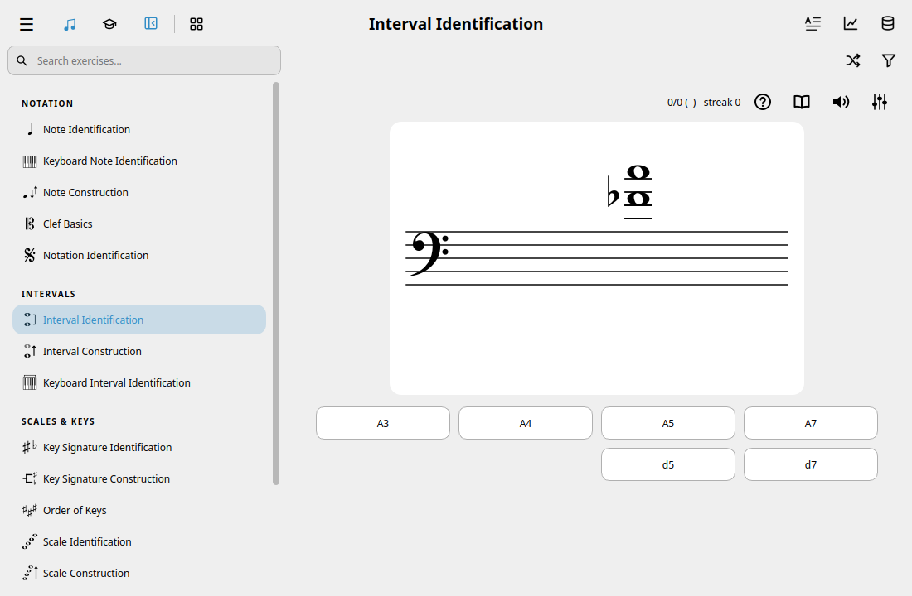

Interval Construction
Place a second note on the staff to form the requested interval. For a minor third above C, count C, D, E, then choose a flat and place E♭. Clicking the staff submits the note. You can also move the caret with the arrow keys and press Enter.
You can also play the endpoint on a MIDI keyboard.
Clefs, Range, and Staff Key determine where the notes can appear. Display Mode stacks harmonic intervals and places melodic notes in sequence, ascending or descending. Under Quality, choose Interval and Quality for an exact spelling, Interval Only for a number, or Quality Only for a quality. When several enabled intervals fit the prompt, any of their endpoints is correct. Intervals, Accidentals, and Note Value control which spellings, written signs, and durations appear.
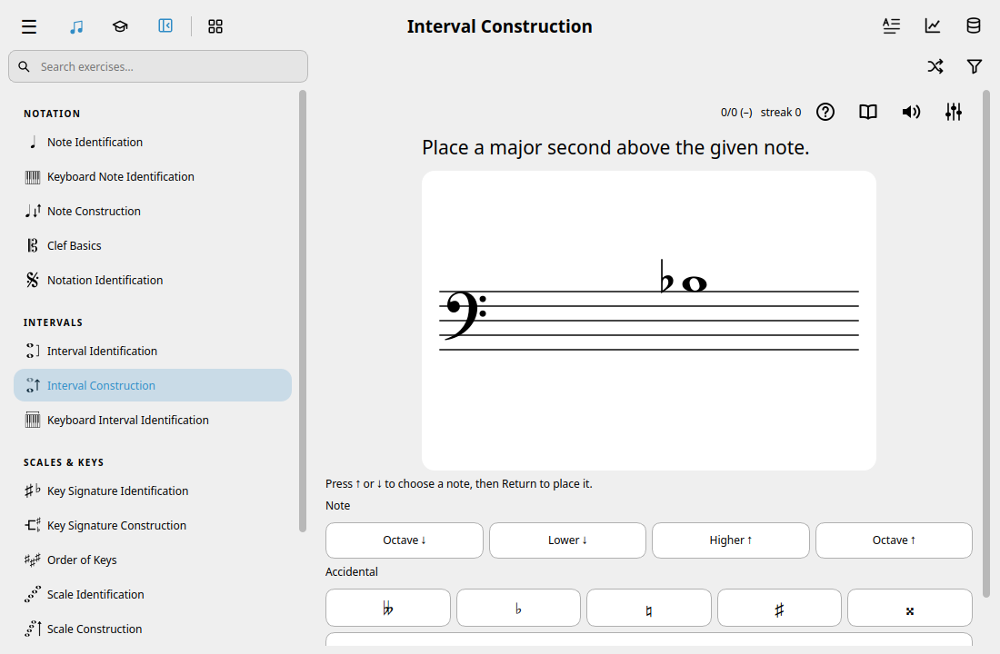
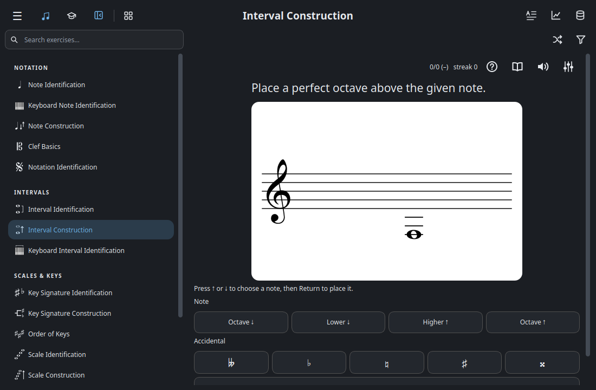
Keyboard Interval Identification
Two piano keys are highlighted together. Identify the interval from the lower key to the higher key. Choose from a configurable number of interval buttons (six by default), show every selected interval, or answer with a quality letter and a number. The full answer bank stays in interval order and scrolls when needed.
Count the half steps between the highlighted keys, including black keys. P means perfect, M means major, and m means minor. Six half steps form a tritone, shown as A4 / d5: the keyboard cannot distinguish an augmented fourth from a diminished fifth without written note spellings. The other distances use their standard interval names.
A correct answer plays both notes together. Open the exercise settings to choose:
Range: drag on the keyboard, adjust the lowest and highest keys with the arrows, or choose Entire keyboard. Both highlighted notes stay within this range. Reset to default restores C3–C5.
Intervals: select the interval distances to practice. Only selected intervals appear as questions and answer choices. The list shows every distance that fits the range, including compound intervals beyond an octave: for example, C3–C5 offers intervals through P15 (two octaves). Options use notation only and are grouped into Simple intervals (up to an octave) and Compound intervals (beyond an octave). Drag the two slider handles below Select all to select an interval range, such as m3–P8. Use the arrow buttons beside From and To to adjust either endpoint by one half step, or click an endpoint’s notation to choose an interval from its scrollable dropdown. These controls change the selected intervals, not the keyboard range. Select all temporarily selects every interval that fits; switching it off restores your previous selection. With no intervals selected, the exercise pauses until you select one. Narrowing the range removes intervals that no longer fit; if a nonempty selection no longer fits, minor seconds are selected so the exercise can continue.
Open Buttons to choose one answer mode:
Limited: use Button count, directly below this option, to choose the maximum number of answers (six by default). Type a count or use its arrows. The count includes the correct answer; fewer buttons appear when fewer intervals are selected.
All: show every selected interval in a fixed, scrollable answer bank.
Compact: click a quality letter and an interval number, in either order. Quality and Interval label the two groups above their buttons. Both A4 and d5 are accepted for a tritone, including corresponding compound spellings.
The mode, limited button count, range, and interval selections are saved.
These settings are saved independently of Keyboard Note Identification.
Key Signature Identification
A key signature is drawn on a staff and you press the tonic of the scale it belongs to. The kind of scale is written under the staff with a blank for the tonic: “_ Major”, “_ minor” or, for a mode, “_ Dorian”.
This exercise makes no sound: a right answer plays no tone. The speaker button is a mute for the whole app, so it works here as everywhere else, but has nothing to silence in this exercise.
A mode uses the key signature of a major key and starts from another note of it, so D Dorian has the signature of C major (no sharps or flats), started from D. By default Alto asks major and natural minor keys, on the treble and bass staves. In the exercise settings you can choose:
Clefs: any of the seven clefs (treble, bass, alto, tenor, soprano, mezzo-soprano and baritone), for the signature that is drawn.
Scales: major (Ionian), Dorian, Phrygian, Lydian, Mixolydian, minor (Aeolian) and Locrian.
Key signatures: which of the fifteen signatures, from seven flats to seven sharps, can appear.
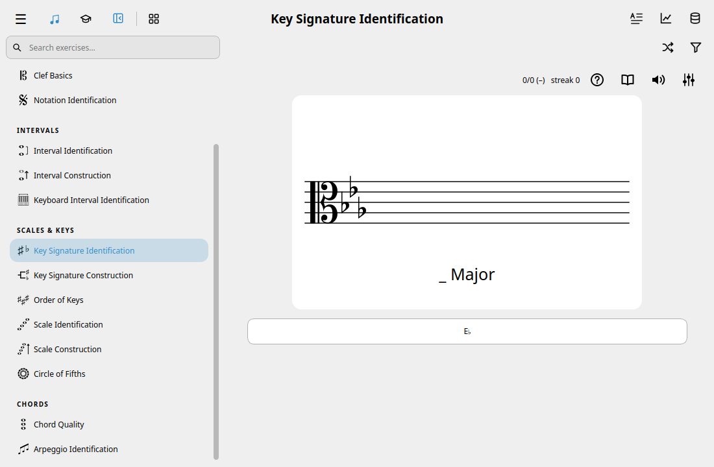
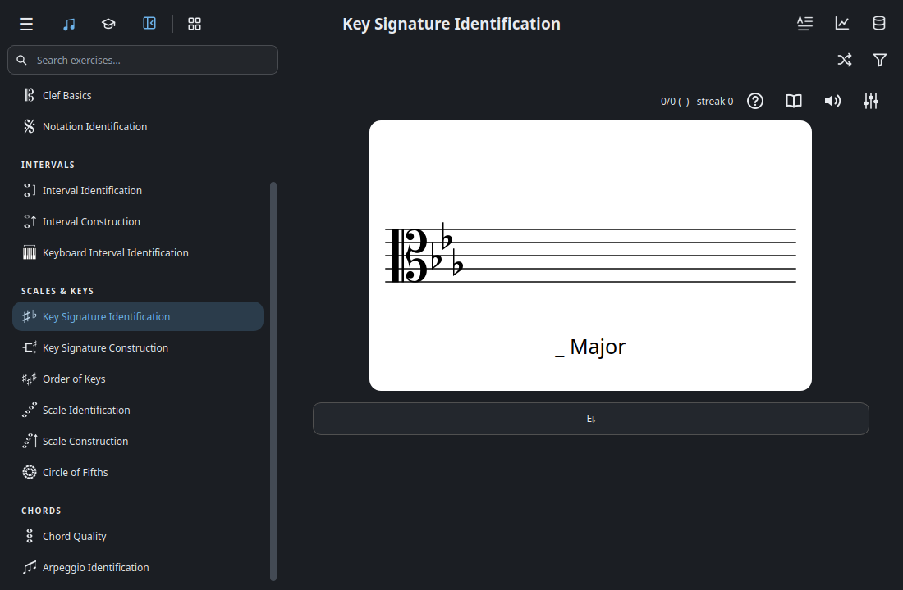
Key Signature Construction
The reverse of the exercise above. A blank staff is shown with the name of a key under it, such as “D Major”, “A♯ minor” or “E Dorian”. Build that key’s signature with the fork under the staff, then press Answer (or Return).
The fork is shaped like a tuning fork lying on its side. Its stem, on the left, ends in a natural sign: no sharps or flats, C major. The stem opens into two tines: the top one has the sharps, 1 to 7, and the bottom one the flats, 1 to 7. A circle marks what you have chosen, and the staff shows that many sharps or flats as you move it. To choose:
Click a number, or the natural sign. A number lights up a little as the mouse passes over it.
Drag the circle along the fork. It follows the mouse, around the bend and out along either tine, and slides to the nearest number when you let go.
Turn the mouse wheel to move the circle along the fork, one number for each notch: up toward more sharps, down toward more flats, passing through the natural sign on the way from one side to the other. The wheel works over the staff and the Answer button too.
Press the arrow keys (↑ or → for a sharp, ↓ or ← for a flat) wherever the keyboard is on the exercise screen, and Home to go back to the natural sign. Then press Return.
A wrong signature turns the circle red and puts it back on the natural sign so you can try again; only your first try counts toward your score. Like Key Signature Identification, this exercise makes no sound.
In the exercise settings you can choose:
Clefs: any of the seven clefs, for the staff the signature is built on.
Scales: major (Ionian), Dorian, Phrygian, Lydian, Mixolydian, minor (Aeolian) and Locrian.
Key signatures: which of the fifteen signatures, from seven flats to seven sharps, can be asked.
The settings are kept apart from those of Key Signature Identification.
Order of Keys
Read the key below the blank staff. Choose ♯ or ♭, then click the line or space for each sign in order. Each click fills the next slot after the clef. For D major in treble clef, place F♯ on the top line, then C♯ in the third space.
Use Undo (Backspace) to remove the last sign and Answer (Return) to submit. Submit the empty staff for a key with no sharps or flats, such as C major, A minor, or D Dorian. With the keyboard, choose a sharp with + or a flat with −, move up or down with the arrow keys, and press P to place each sign.
Open the exercise settings to choose Clefs, Scales, and Key Signatures. By default, questions use treble and bass clefs, major and natural minor scales, and all 15 signatures. You can select any of the seven single-staff clefs and any of the seven diatonic modes. For example, selecting alto clef, Dorian, and two flats gives you C Dorian on an alto staff.
Starting Accidentals lets you choose how many sharps or flats are already on the staff. The default, 0, starts with a blank signature. For example, with 2 ♯ selected, a question in A major shows two of its three sharps in their usual positions. Place the missing signs from left to right. You can enter up to seven signs in total, including those already shown. If the key needs six and you submit seven, the answer is marked wrong. Undo removes only signs you placed. When all the signs are already present, press Answer. Counts must fit one of your selected key signatures. If changing keys rules out every selected count, the setting returns to 0.
Scale Identification
Read the eight notes on the staff. The first and last notes give the tonic. The pattern of whole and half steps gives the mode. For example, a scale from D to D with no sharps or flats is D Dorian. Under Question Type, check Key to answer D, Mode to answer Dorian, or both to identify the full scale.
Open Clefs and Scales to choose the staves and modes to practice. Motion sets the direction of the written scale. Scale Key selects the signatures the scales may use, with separate Major and Minor tabs. Staff Key controls the signature drawn beside the clef. Read any accidentals beside the notes when the two signatures differ.
Under Buttons, Limited offers complete answers up to the selected button count. With All and both question types enabled, choose a tonic and a mode from separate groups in either order.
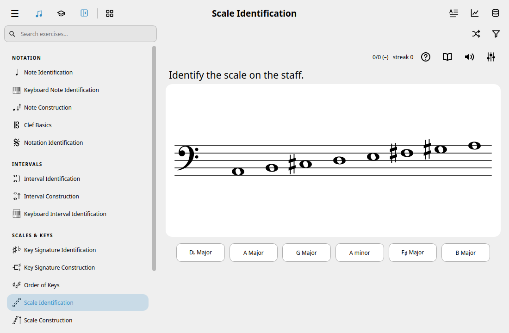
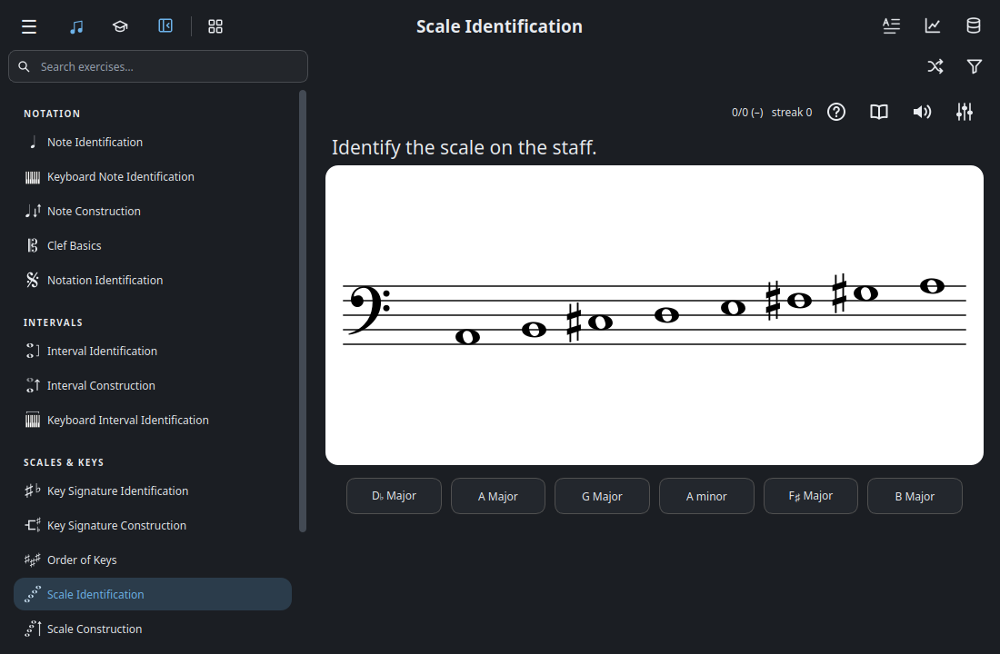
Scale Construction
A blank staff is shown with the name of a scale under it, such as “D Major”, “E♭ minor” or “A Dorian”. Click the staff to place the scale’s notes from left to right in the requested direction, ending an octave from the first note: eight notes in all. In Motion, choose Ascending or Descending. The next note follows the pointer, snapped to a line or space, and each click puts it in the next place, so the notes do not move as you add more. With Octave off, choose any starting octave that leaves room for all eight notes.
You never have to click the staff. Higher, Lower, Octave ↑ and Octave ↓ under it move the next note, the sign buttons choose its sign, and Place note puts it in the next place; the same things are on the keys (see Shortcuts), and Return places the note and, when everything is placed, answers.
By default the staff has no key signature, so a note that needs a sharp or a flat needs its own sign (see the staff’s key signature below for a staff that has one). To choose the sign for the next note:
Right click the staff to step through no sign, ♯ and ♭, and around again.
Turn the mouse wheel over the staff to step through them the same way: up goes no sign, ♯, ♭, and down goes the other way around.
Press one of the sign buttons under the staff.
Then click to place the note. A sign is used up by the note it goes on. Only the exact spelling counts, so G♯ is not A♭.
Undo (or Backspace) takes back the last thing you placed.
Answer (or Enter) hands in the scale once everything is placed.
A wrong scale is cleared so that you can try again, and only your first try counts toward your score. With After Animation or Wait, a correct scale plays back. Each note turns green as it sounds, with the same timing when muted.
In the exercise settings you can choose:
Clefs: any of the seven clefs, for the staff the scale is placed on.
Scales: major (Ionian), Dorian, Phrygian, Lydian, Mixolydian, minor (Aeolian) and Locrian.
Staff Key: which key signatures may be drawn on the staff, from seven flats to seven sharps. It is separate from the scale’s own signature (below). By default only the blank staff, with no sharps or flats, is chosen.
Scale Key: choose signatures separately on the Major and Minor tabs. Natural minor uses the Minor tab. Major and the other modes use the Major tab’s signatures.
Octave: a switch, off by default. When it is on, the scale has to start in the octave named (below).
Steps: a switch, off by default. When it is on, you also mark the whole and half steps between the notes (below).
The settings are kept apart from those of the other exercises.
Starting in the right octave
By default the first and last notes must be an octave apart, and the scale is named without a starting octave, such as “G Major”. With Octave on, the name says which octave the first note is in, such as “G2 Major” or “B♭4 minor”, using the same numbers as note names everywhere in Alto (middle C is C4). The scale then has to be placed there: the right notes an octave higher or lower are wrong.
The octave is part of the question, so scales are asked from well below to well above the staff. Alto only asks a scale that can be placed in full: all eight notes lie on the staff or on its ledger lines, within the furthest ledger line the staff can be clicked on. A bass clef G2 Major, which starts on the bottom line, can be asked; a scale that would run off the top of the ledger lines cannot.
The staff’s key signature
The key signature on the staff and the key signature of the scale are two separate settings, so a scale can be asked on a staff whose signature is not its own. Each question picks one of each. For example, with two flats on the staff (the signature of B♭ major) and a C major scale to place:
A note you place with no sign takes the sign the staff’s signature gives its letter, as it would when you read music. With two flats, B and E are flat.
So C major needs a natural (♮) on its E and its B, which you choose with the sign buttons, a right click or the wheel. Right click and the wheel step through no sign, ♯, ♭ and ♮ when the staff has a signature.
Going the other way, a scale that has a flat the staff does not give needs that flat written as a sign.
The notes the staff’s signature already covers are written with no sign, as in any score; only the notes that differ from it get one. Only the exact spelling counts, as ever.
Marking the steps
With Steps on, once the eight notes are placed two lines rise from each pair of neighboring notes to a point above them, starting with the first pair, with the step written over the point. The step that a click would mark is shown there in blue, as W (a whole step, two semitones) or H (a half step, one semitone). It starts as W. To choose:
Turn the mouse wheel over the staff to switch between W and H (the wheel is for the signs until all the notes are placed).
Right click the staff to switch between W and H.
Press the W or H button under the staff.
Then left click the staff to mark the step and move on to the next pair. Each new pair starts as W again, since most steps are whole. Undo takes back the steps, last first, before it takes back any notes. The scale is right when the notes and every step are right: a major scale is W W H W W W H, and a natural minor scale is W H W W H W W. The lines and letters turn green with the notes as the right scale plays.
Circle of Fifths
A circle of fifths, drawn as two rings of twelve wedges. The outer ring holds the major keys, with C at the top and each step clockwise a fifth higher: G, D, A, E, B, then F♯ at the bottom, and around through the flats back to F. The inner ring holds their relative minors, so A minor sits under C major, E minor under G major, and so on. The wedges are colored by key signature: cyan for the flat keys on the left, through royal blue at C, to indigo for the sharp keys on the right (the colors can be changed). The disc in the middle, which is the color of the window, shows the staff.
Every question lights one cell and leaves its answer blank. There are three kinds, and the exercise settings (the sliders button) switch each on or off:
Relative major. A minor key is shown, such as “F♯ minor”, with the wedge of the outer ring beside it blank. Press the name of its relative major, which has the same key signature: A, in this case.
Relative minor. A major key is shown and the inner wedge beside it is blank. Press the name of its relative minor.
Roman numerals. A key is in the middle with its staff and signature, and the six chords of the key that fit on the circle are lit. One of them is outlined. Press its Roman numeral.
All of them are on buttons at the bottom, laid out like the Keyboard Note Identification screen: the letters in the middle row, the sharps above them and the flats below. For the minor keys the buttons read Am, F♯m and so on. You can also type: a letter, Shift and a letter for a sharp, or Ctrl and a letter for a flat. The numerals are on 1 to 6.
Colors
The Colors row of the exercise settings (the sliders button) chooses how the circle is colored. Pick one of fourteen presets, or press Create your own… to make one.
Cyan to indigo is the default. Cyan runs through the flat keys, royal blue marks C and indigo the sharp keys, so a key’s color tells you how far it is from C.
Midnight, Deepening, Two blues, Checker and Glacier are other blues to go with this site. Glacier, like Paper, has pale wedges with dark names, for a light window.
Sharps and flats, Major and minor, Spectrum, After Scriabin, Ink, Ember, Color-blind safe and Paper are the other presets. Color-blind safe uses six hues from the Okabe and Ito palette.
A scheme of your own is made in one of five ways: One color, Two rings (one color for the major keys and one for the minor), By key signature (a color for the flat keys, for C and for the sharp keys, blended between), Distance from C (a color for C and one for F♯, mirrored on both sides) and Around the circle (one color, turned a twelfth of the wheel for each step). The colors you choose are what a cell looks like when it is lit; the quiet cells are made from them. You can choose dark wedges with light names or light wedges with dark names, name the scheme, edit it later and delete it. Your schemes are saved with your other settings, up to 24 of them. The colors apply to every picture of the circle: the exercise, the lessons and the reference. Changing them keeps the question you are on.
Keys with two names
Three of the wedges have two names on the circle: B and C♭, F♯ and G♭, and D♭ and C♯, with their minors G♯m and A♭m, D♯m and E♭m, and B♭m and A♯m. For these you press both names, in either order. A right first name is marked and its button is switched off, the middle of the circle says “and its other name”, and nothing is scored until the second is pressed. A wrong button at any point counts as a miss, and you can carry on until both are found.
Roman numerals on the circle
A key has seven chords, and the circle has room for six of them: its own wedge and the wedge on each side, on both rings. The outer ring holds the major chords, so it gets the capitals: I (the key itself), IV (one step counterclockwise) and V (one step clockwise). The inner ring holds the minor chords, so it gets the small letters: vi (under the key), ii (under IV) and iii (under V). In C major that is I = C, ii = Dm, iii = Em, IV = F, V = G and vi = Am.
If you have seen pictures of this with two sets of numerals, one outer and one inner, they are one set shared between the two rings. The seventh chord, vii° (B diminished in C major), is diminished and does not sit on the circle, so it is never asked. A chord is spelled as its key spells it: in F♯ major the V is C♯, although that wedge is labeled D♭ with C♯ as its other name.
Right and wrong answers
A right answer brightens the cell and writes its name in it, and puts the key’s staff and signature in the middle: “A major, 3 sharps”. For a numeral question all six numerals appear.
The book button (experimental), beside the help button, opens a reference in a pane on the right: a short description and an interactive circle with every key named. Click a key on either ring, or move with the arrow keys (Left and Right go around, Up and Down switch rings, Escape or a click in the middle starts again). The circle lights that key’s six chords, shows its key signature in the middle, and the text underneath explains it: its sharps or flats, which key it follows, its relative minor or major, and its chords. It shares the right-hand side with the settings, so opening one closes the other. It is a study aid, so it also gives away the answers. A button at the top of the pane opens the circle of fifths lesson.
A wrong answer flashes the cell in the same red as the wrong button, striped so that it still shows on the red wedge at the top. The button is switched off and you can try again. Only your first try counts toward your score.
This exercise makes no sound.
Chord Quality
A chord is drawn in root position on a treble or bass staff. Press its type:
major, minor, diminished, augmented, major 7th, dominant 7th, minor 7th, half-diminished 7th and diminished 7th.
Check the size of the intervals stacked above the lowest note to tell the types apart.
Arpeggio Identification
A chord is drawn one note at a time, rising from its lowest note to the same note an octave higher. Press its type, then press its inversion. The answer counts once you have chosen both, in either order, and a wrong pair is cleared so you can try again.
The inversion is which chord tone is lowest:
Inversion |
Lowest note |
|---|---|
Root position |
the root |
1st inversion |
the third |
2nd inversion |
the fifth |
3rd inversion |
the seventh (seventh chords only) |
By default Alto asks major, minor, dominant 7th and diminished 7th arpeggios on the treble and bass staves, in every inversion. In the exercise settings you can choose:
Clefs: any of the seven clefs, from treble to baritone.
Arpeggio types: any of major, minor, diminished and augmented triads, and dominant 7th, major 7th, minor 7th, half-diminished 7th and diminished 7th chords. The type buttons below the staff follow your choice.
Inversions: root position and the first three inversions. A triad has no 3rd inversion, so that choice only applies to seventh chords.
Key signatures: draw a key signature from the keys you pick. The arpeggio then only gets a sign where it differs from the signature, so a natural sign appears where the chord needs one.
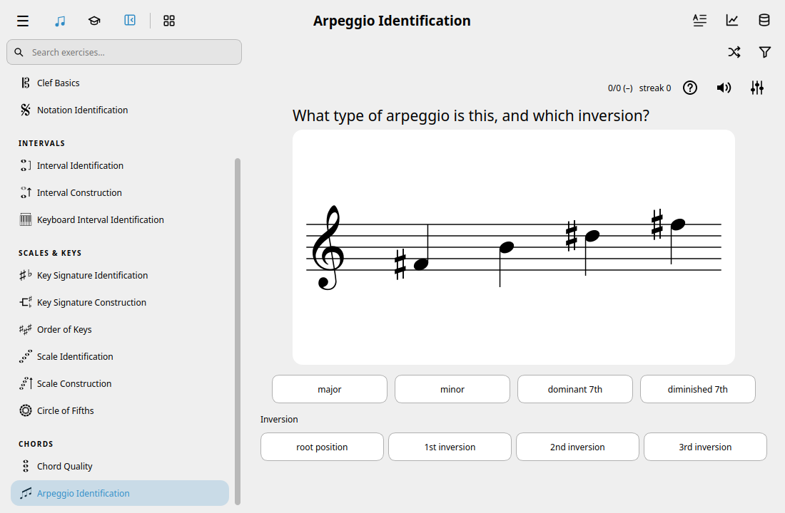
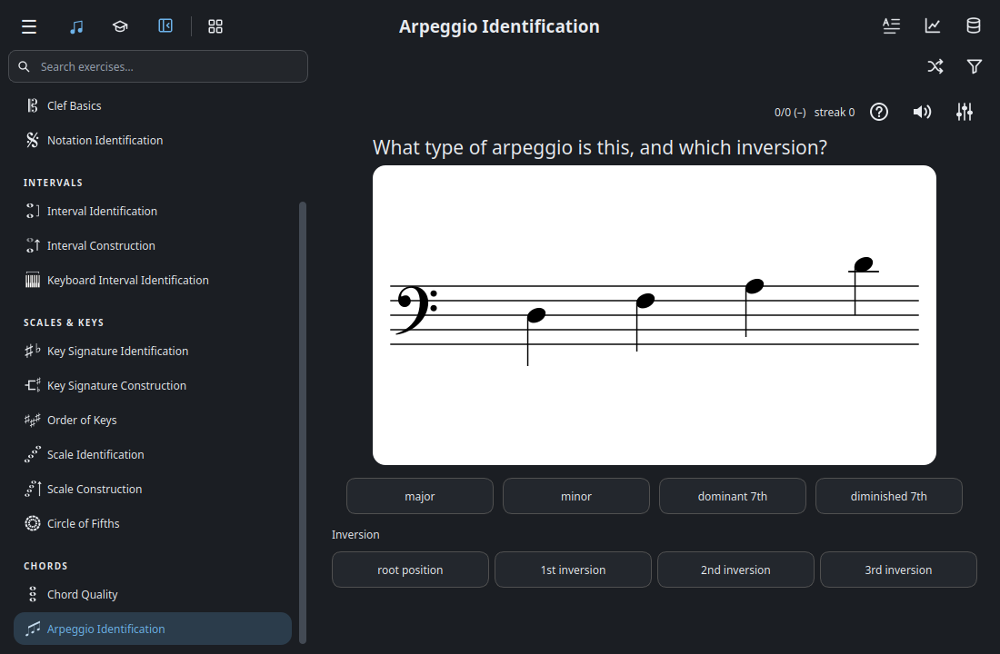
Instrument pack exercises
Installed packs add exercises to the Instruments category. The example viola pack includes Viola Note Identification and Parts of the Viola. The example harpsichord pack adds Harpsichord Interval Identification and Parts of the Harpsichord. Download an example and follow its tutorial to create exercises with your own artwork and recordings. Viola plugin tutorial · Harpsichord plugin tutorial